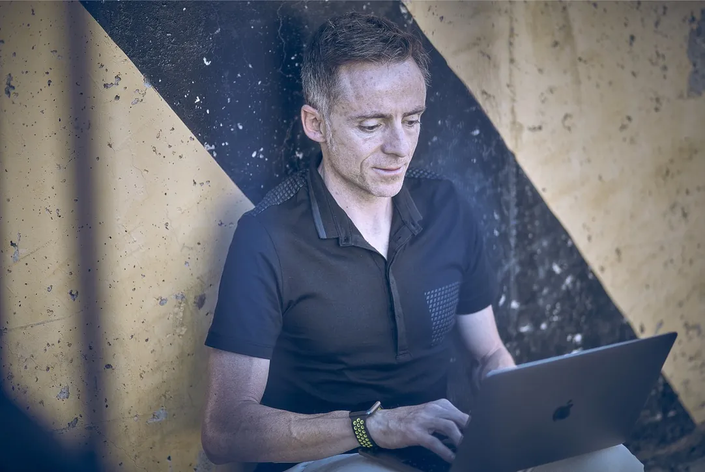

Huhtamaki
Mi primer puesto: asistente de exportación y de marketing.

0125 años ayudando a empresas a vender, organizarse y decidir mejor. Ahora, con inteligencia artificial.
Llevo más de 25 años en marketing, negocio y transformación digital: he dirigido el marketing de empresas que venden en más de 140 países, he creado dos empresas de software y llevo veinte años explicando gestión en aulas, radio y prensa. A principios de 2026 creé iLumya, una nueva empresa tecnológica, y a través de ella trabajo como AI Officer para pymes: el responsable de IA que una pyme no puede tener en plantilla. Y soy formador de equipos: preparo a las personas para que la tecnología y la IA se usen de verdad en el día a día.
Adaptamos la gestión de tu empresa a la IA… y la hacemos evolucionar cada mes.
En 2026 creé iLumya, un nuevo paradigma de empresa tecnológica de IA y software para pymes. Mi trabajo como AI Officer lo desarrollo a través de iLumya: personas que adaptan la gestión de la empresa a la IA y tecnología de IA que hacen el trabajo cada día - "Trabajarás como no esperas hacerlo".
Visitar ilumya.es ↗Cumplir es el suelo, no el techo. Te ayudo a revisar, ordenar y formar, y sobre todo a sacar resultados: ahorrar tiempo, vender con más confianza y tener a alguien que se ocupe de la IA cada mes. Elige por la necesidad, no por el nombre. Todos los presto a través de iLumya.
Un proceso, un piloto y el ahorro medido en horas.
3 semanasLanzar agentes de IA con permisos, aprobaciones y registro.
4-6 semanasElegir herramienta y proveedor sin depender de nadie.
2-4 semanasResponder a clientes grandes y licitaciones sobre tu uso de IA.
2-3 semanasEnsayar qué haces si la IA falla, antes de que falle.
1 jornadaTener un responsable de IA sin contratarlo a jornada completa.
MensualQue el dueño use la IA y decida con criterio.
6 sesionesPreparar a la industria para máquinas y productos con IA.
4-8 semanasUsar IA en clínicas y centros con datos de salud.
3-6 semanasQue gestorías y agencias ofrezcan IA con respaldo.
AnualGuía actualizada Cooralia Intelligent Works × Aquora Business Education sobre el AI Act post-2 agosto. Lo que estamos viendo en las primeras revisiones: usos de IA repartidos entre departamentos, sin inventario común y sin criterios uniformes de tratamiento. Sin ese primer barrido, cualquier requerimiento obliga a reconstruir con urgencia.
#AIAct
Ver en LinkedIn ↗ 15 jul 2026Llevo semanas viendo inventarios donde nadie ha revisado si las herramientas de IA generativa que usan llevan marcado nativo o no. La Comisión Europea acaba de firmar el Código sobre Transparencia del contenido con IA: a partir del 2 de agosto, es la referencia oficial para demostrar cumplimiento del Artículo 50.
#AIAct · #GobernanzaIA · #IAgenerativa
Ver en LinkedIn ↗ 8 jul 2026Sesión en la Cámara Alicante sobre las obligaciones legales del AI Act para pymes que ya usan IA: los 6 frentes a ordenar, el primer riesgo real (el Shadow AI), las zonas sensibles y las 9 evidencias mínimas. «La IA no se frena. Se ordena.»
Publicación de Cooralia Intelligent Works
Ver en LinkedIn ↗Publicaciones de LinkedIn, actualizadas a 19 de noviembre de 2026.
Mi primer puesto: asistente de exportación y de marketing.
Marketing Manager: creé el departamento de marketing y lo dirigí.
Fundé Marketing Konsulting Factory: aplicaciones de gestión como servicio (SaaS) que el propio usuario podía personalizar.
Docente de marketing y gestión empresarial en COEPA, AIJU, AICE y AEC; «La Hora de la Economía» en SER Radio Alcoy y editoriales de Economía y Empresa en Grupo Zeta.
Marketing Manager: el plan de marketing, de diseñarlo a ejecutarlo.
Marketing Manager en un grupo de puericultura electrónica y juguete educativo con presencia en más de 140 países.
Desarrollo de negocio en una empresa dedicada a la obtención de subvenciones.
Desarrollé para el Ayuntamiento el Plan Estratégico Novelda Desarrollo & Vanguardia 2011-2018 (N:D&V).
Creé y dirigí un CRM en modo SaaS.
Marketing Manager. «La percepción de las cosas es más importante que la realidad».
Propietario y gerente de la plataforma que optimiza la gestión de gastos de empresa. Vendida con éxito a un grupo de software.
Creé iLumya, empresa tecnológica de IA para pymes, y desde ella trabajo como AI Officer.
Una licenciatura, cinco másteres y tres cursos superiores entre 1993 y 2017: del marketing clásico a internet, el comercio digital y los datos. Lo que enseño a los equipos lo he estudiado antes.
Licenciado en Marketing.
Qué es el big data, cómo cambia las organizaciones y cómo sacarle beneficio.
Estrategias de comunicación, venta, captación y fidelización en internet.
Liderazgo y transformación de negocios en entornos globales y cambiantes.
Especialidad en comunicación no verbal.
De IA para tu empresa, de una charla para tu equipo o de una ruta en bici.